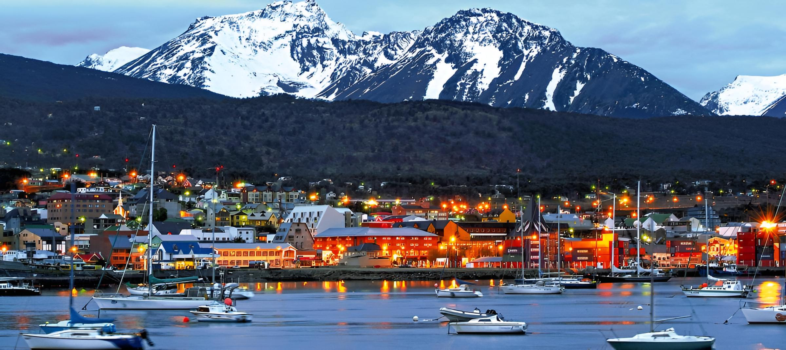

Ushuaia: la ciudad del fin del mundo
Ushuaia, en Tierra del Fuego, es conocida como la ciudad más austral del mundo. Rodeada de montañas, bosques y el Canal Beagle, ofrece paisajes únicos y aventuras que no se encuentran en ningún otro lugar.
Los visitantes pueden realizar trekking, paseos en barco, excursiones al Parque Nacional Tierra del Fuego y avistaje de fauna, incluyendo lobos marinos y aves marinas. Además, es el punto de partida de cruceros hacia la Antártida.
La ciudad cuenta con una amplia oferta de alojamiento, restaurantes con gastronomía regional y actividades culturales, como museos sobre la historia de la región y la vida de los pueblos originarios.
La mejor época para visitar es entre noviembre y marzo, cuando el clima es más templado y se pueden disfrutar plenamente las actividades al aire libre. Sin embargo, cada estación ofrece su propio encanto, desde paisajes nevados en invierno hasta largos días de verano para explorar.
Ushuaia combina naturaleza, aventura y un ambiente único en el fin del mundo, haciendo que cada viaje sea inolvidable. Una vez que la conocés, seguro querrás volver para seguir explorando sus maravillas.
← Volver a Categorías